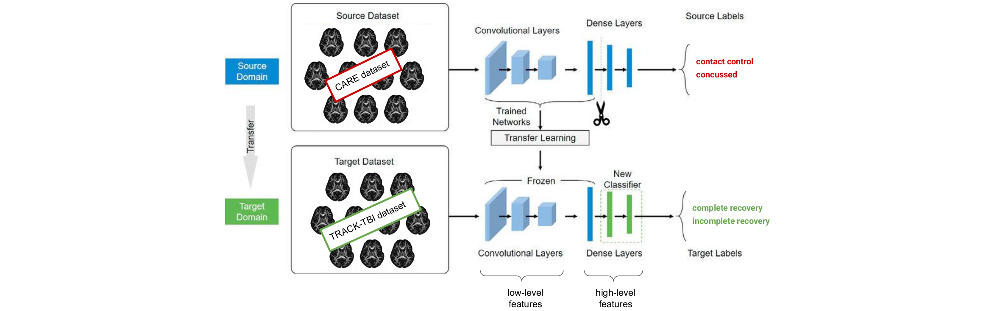

Concussion classification
The aim of this study is to use a Transfer Learning framework to classify complete versus incomplete concussion recovery.
A concussion is a form of mild Traumatic Brain Injury (mTBI) that leads to temporary alterations of brain functions and incapacitates behavior. Although in most of the cases the symptoms resolve within a few days to a couple of weeks, sometimes they can last for months or even for years, a condition identified as incomplete recovery. Early identification of incomplete recoveries would allow for early and better optimized treatment.
Diffusion Magnetic Resonance Imaging (MRI) is a powerful neuroimaging technique to study the microstructural properties of the brain in vivo. Recent multi-center data collection and sharing within the community of large MRI datasets have allowed researchers to study microstructural changes after a concussion on an unprecedented scale. At the same time, the use of Transfer Learning has become popular in particular in fields for which there is a lack of annotated data. In neuroimaging and in general in clinical studies, having many annotated samples is generally difficult due for example to long acquisition times, high costs, and difficulties related to data acquisition for specific populations (i.e. children, elderly population, or individuals with pathologies). With the use of Transfer Learning we can address this issue by first, training a model to solve a specific task for which a big dataset is available, and then fine-tuning the model to address the original, similar, task.
We used Fractional Anisotropy (FA) 3D images as input for our models for concussion classification, and deep neural networks, specifically 3D Convolutional Neural Networks (CNNs), as models for our experiments. CNNs are considered state-of-the-art models to solve computer vision tasks such as image classification and segmentation, and have been already used in several other medical applications, like e.g. Alzheimer's detection and lung segmentation.
First, we trained CNNs from scratch to have baseline scores to compare the following models with. A ResNet with 18 layers was used as the model architecture (ResNet18).
Then, we tested the following pretrained models:
- CNN using a ResNet18 pretrained on kinetics data
- CNN using a ResNet50 pretrained on 3D medical imaging data
- CNN using a InceptionResNet pretrained on 3D brain imaging data
In all the three cases, we applied Transfer Learning in two ways:
- retraining only the classification layers, i.e. only the fully connected layers
- retraining the whole network
This is an ongoing study.